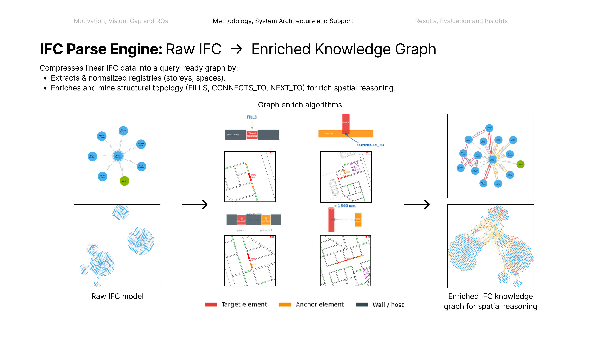
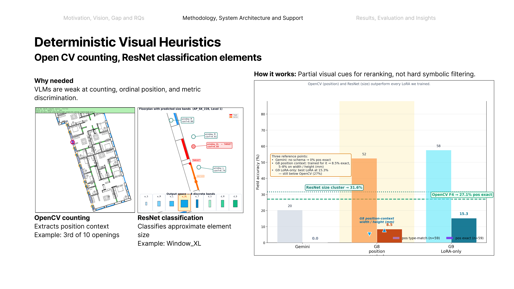

Key ModulesHow it works under the hood

IFC Parse & Enrich Engine
Converts raw IFC into a query-ready Neo4j graph, enriching topology beyond native containment/fill with retrieval-oriented edges: NEXT_TO, CONNECTS_TO, ADJACENT_TO, ON_STOREY.

Symbolic Planner
Nine priority strategies; the recall-preserving p0∪p1 union planner
combines attribute filtering with spatial-topology ranking. Templates are
deterministic — same input, same query, same result.

Synthetic Data Pipeline
Skeleton-first generation fixes ground truth before adding stochastic visual evidence: IFC mining → Blender renders with hard negatives → Gemini text → LLM-as-judge filter → 990 cases, no real labels.

Deterministic Visual Heuristics
OpenCV handles counting and ordinal slot position; ResNet classifies element size bands. These inject discriminative cues into the reranker for sub-tasks VLMs do unreliably.
The neural extractor is a fine-tuned
Qwen2.5-VL (LoRA, G-series) that emits a structured contract
{storey, ifc_class, spatial_relations:[{predicate, object_type, …}]} —
reaching 82% direction accuracy where zero-shot Gemini scores 0%.